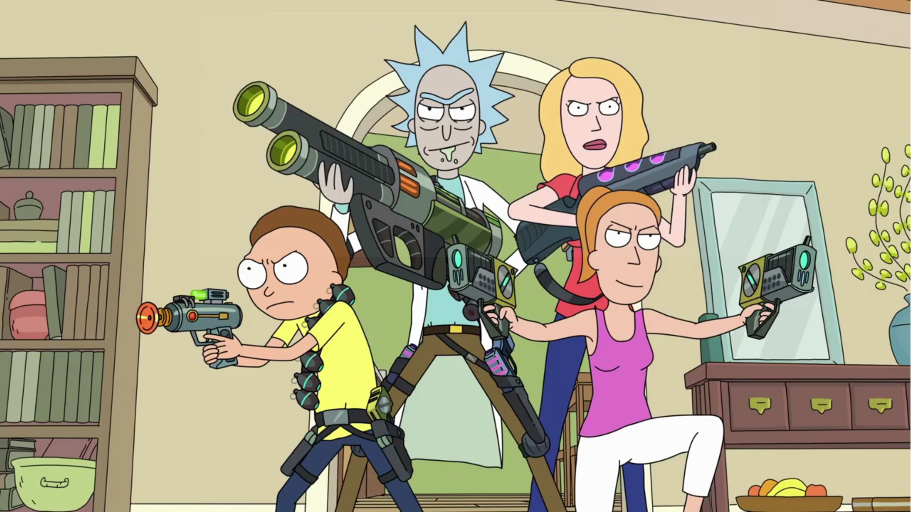

My Photos


| Course | Type | Grade |
|---|---|---|
| Introduction to Programming | Obligatory | 9 |
| Engilish | Obligatory | 4 |
| Physics | Obligatory | 10 |
| Maths | Obligatory | 9 |
| Compilers | Obligatory | 8 |
| Networking | Obligatory | 7 |
| HCI | Optional | 6 |
| DataBase | Obligatory | 7 |
| Programming | Obligatory | 4 |
| Data Structures | Obligatory | 7 |